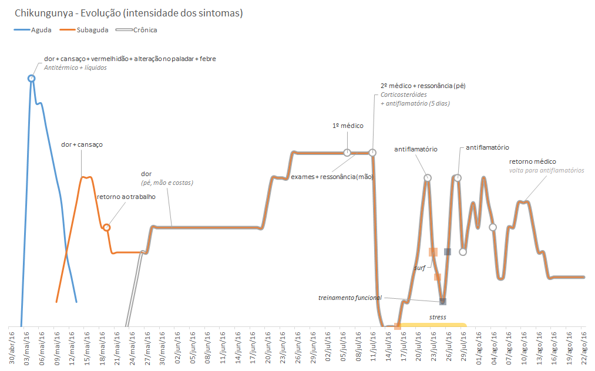

Saúde / Arquivo
Back again [Chikungunya]
Um diário pessoal de 2016 acompanha a evolução dos sintomas ao longo do tempo.
O gráfico reproduz a forma das curvas desenhadas pelo autor. A escala vertical é qualitativa. Os pontos digitalizados descrevem o traçado de uma pessoa.
Publicação original
Quase dois anos depois do último post, volto com um tema um pouco menos light e data intensive, mas com probabilidade de ser mais útil que os anteriores.
Em maio de 2016 eu contrai Chikungunya durante uma viagem para Itacaré – BA (link para o site da OMS), uma doença transmitida pelos mosquitos Aedes aegypti e Aedes albopictus e com origem na África (primeiro relato na Tanzânia em 1952). E apesar de estarmos em pleno século XXI e vários sites apresentarem boas descrições da doença, sintomas e tratamentos, tive muita dificuldade para obter informações ou relatos que me ajudassem a encará-la com mais clareza.
Antes de começar, preciso fazer 4 grandes disclaimers:
- Existe um relato extremamente detalhado de uma americana que contraiu Chikungunya em 2014 que serviu de inspiração para esse relato (link);
- Não sou médico, nem qualificado ou autorizado para sugerir qualquer tipo de tratamento/diagnóstico; esse é um relato da doença a partir de uma visão pessoal e ninguém deve seguir ou tomar qualquer decisão baseado nele. No caso de suspeita, procure um médico.
- N=1; ou seja, estatisticamente, meus relatos são a definição precisa de viés amostral e provavelmente não são representativos de nenhuma população.
O relato abaixo está divido em 3 partes, que representam as fases usuais Chikungunya: i) aguda; ii) subaguda; iii) crônica. Essas fases estão representadas no gráfico abaixo o qual procurarei manter atualizado (4o disclaimer: não sei se estou na fase subaguda ou na crônica; isso significa que tentarei atualizar o final do post com a passagem do tempo):


Aguda
Sintomas principais: febre + artralgia + manchas na pele + disgeusia + fadiga
Tratamento: dipirona sódica + líquidos em excesso
Duração: ~10 dias
A fase aguda é a que mais se distingue das demais, principalmente pela intensidade e por apresentar sintomas que desaparecem nas demais. No meu caso, essa fase se iniciou no 5º/6º dia de férias durante a madrugada com uma febre de 38,5º C e dores no corpo. Olhando para trás, lembro de uma dor na mão direita que associei ao surf e acabei não prestando atenção (não que teria feito alguma diferença, mas ela me acompanhou em todas as fases). Ao acordar na madrugada com esses sintomas a primeira coisa que veio a cabeça foi o retorno de uma infecção aguda que tive em 2014 (essa fica para outra vez), mas descartei rapidamente essa suspeita e entrei o looping
google -> doenças Bahia -> google -> dengue -> google -> chikungunya
Match! Febre: checked; Dores: checked. O único ponto de indecisão era o nível da febre: como vários sites falavam em uma febre de 39ºC e estava com 38,5ºC pensei que só teria certeza que era Chikungunya quando atingisse a marca “oficial” (o que demorou apenas 4 horas de sono).
A visita ao pronto socorro de Itacaré, além de cansativa (caminhar era torturante) foi pouco frutífera: a recomendação foi tomar antitérmico, líquidos e aguardar três dias para realizar exames de sangue. Mas a verdade é que nessa fase essa é a única coisa a fazer e de jeito nenhum realizar qualquer tipo de automedicação (especialmente, tomar anti-inflamatórios não esteroides como aspirina). A febre diminuiu um pouco (sumiu por completo no dia seguinte) mas as dores no corpo pioraram ao longo do dia e sair da cama era equivalente a correr uma maratona; a dor não só limitava os movimentos como um cansaço generalizado fazia as partes do corpo pesarem mais do que o usual.
Não tive nenhum inchaço nas juntas ou edemas, o que é algo comum na doença; além disso, no meu caso as dores se concentravam mais no lado direito do corpo (usualmente costumam ser simétricas). Mas logo surgiu uma das sensações mais desagradáveis desse período: a perda total do paladar e a substituição por um gosto extremamente ruim que tornava a alimentação o mais desagradável possível (disgeusia). Em alguns relatos a alteração é tão ruim que a pessoa deixa de comer; no meu caso, gerou mais uma aversão à comida que uma rejeição.
Dois dias depois dos sintomas iniciais, a febre havia sumido completamente e as dores diminuíram um pouco (bem pouco) o que me levou a retornar para São Paulo onde realizei os exames (com resultado positivo para chikungunya). Os dias que se seguiram foram a combinação de uma ingestão exagerada de líquidos, pouco apetite e o combo dor/cansaço. Foram dias de cama, netflix e muita pesquisa no google – o que certamente não ajudou a ficar mais relaxado com as possibilidades de evolução e sintomas futuros. Porém, como a informação sobre a doença é escassa e os médicos ainda estão aprendendo sobre ela, não tem muito como escapar da vontade de entender o que está acontecendo.
Apareceram nesses dias uma vermelhidão pelo corpo concomitante a uma coceira insuportável – que me impediu de dormir por duas noites. Para resolver essa última, tomei um anti-histaminíco que acabou resolvendo o problema (dica: evitar banhos quentes nesse momento – só piora a sensação). Houve também a ocorrência de linfadenopatia, i.e., inchaço de linfonodos: um na perna e dois no pescoço; em termos simples, são pontos inchados no corpo associados a bastante dor. Porém foram dias de pouco ânimo, baixa vontade de sair de casa e atenção reduzida. Era como se minha mente estivesse pouco focada nas coisas ao redor e o objetivo do meu corpo era apenas descansar e abstrair de tudo. De vez em quando eu tentava realizar alguma tarefa que considerava fácil para entender minhas limitações; levantar objetos com a mão direita era bem difícil e caminhar pressionando o pé direito no chão doía bastante. Essas tentativas eram fonte de angústia e apatia, mas eu sentia a necessidade de realizá-las pela incapacidade de saber/controlar o que estava por vir.
Enfim, considerei o fim da fase aguda como o desaparecimento da alteração do paladar, vermelhidão e febre. A dor e o cansaço são onipresentes na fase seguinte e trazem também um humor oscilante e mudanças psicológica decorrentes da alteração da rotina que geralmente causam um estado mais apático que o normal. Na minha visão são dois grupos de aspectos que afetam o estado de espírito de pessoas que contraíram Chikungunya: i) limitação que a dor traz e impossibilidade de realizar tarefas até então ordinárias; ii) incapacidade de antever a duração dos sintomas, que vem associada de uma sensação de impotência. Mas alteração de humor é mais sutil que os outros sintomas e difícil de entender se está relacionada à doença ou a outros fatores.
E com o fim da fase aguda decidi retornar ao trabalho e iniciar uma tentativa de retornar a minha rotina normal, com pouco sucesso. Aliás, a principal recomendação para esse início é descansar o máximo possível. A tentativa de retomar as atividades, além de trazer frustração, podem gerar stress e ansiedade que certamente não ajudam na recuperação. A decisão sobre tirar um licença vai de cada um, mas é importante conversar com um médico para entender qual é a melhor maneira de realizar o tratamento.
Subaguda
Sintomas principais: artralgia + cansaço + efeitos psicológicos
Tratamento: todos recomendados
Duração: entre 3-4 meses
A fase subaguda é tudo aquilo que vem com o final do combo de sintomas iniciais e antes da decisão de que se está na fase crônica. E digo decisão, porque essas marcas são mais para delimitar qual tratamento seguir que uma definição médica precisa. Descobri nesse processo que a marca de 3 meses está muito associada a recomendação padrão de diagnóstico de artrite reumatoide – que fala sobre esperar a marca de 3 meses de sintomas para definição mais precisa do diagnóstico. Como muitas infecções “imitam” os sintomas de artrite, era comum esperar os 3 meses justamente para descartar uma infecção viral, que, apesar de intensas, geralmente desaparecem em um espaço curto de tempo. A Chikungunya veio para atrapalhar esse diagnóstico uma vez que a atrite causada pela doença é aguda mas pode durar até alguns anos (ou seja, um crônico que passa). Por isso, passado os 3 meses passa a ser considerada a existência de uma fase crônica ainda que associada a uma infecção aguda.
Do ponto de vista de sintomas, essa fase é marcada pela dor nas juntas e inflamação (e dor) nas articulações parecidas com dores de torções ou batidas (embora algumas vezes pareciam ser alfinetadas em pontos específicos do corpo). É uma fase dura do ponto de vista psicológico porque a convivência com a dor passa a ser constante mas num quadro que permite retomar parte das atividades diárias. A dor como companheira se torna uma um lembrete da impotência, ignorância e do quadro infeccioso em si. No meu caso, essa dor se concentrou no pé direito (na base, bem próximo ao dedão e no tornozelo), na mão direita (movimentos laterais do punho e ao carregar algo com a palma para cima) e na lombar (antiga lesão minha).
Tentei descobrir em que momentos ou quais fatores desencadeavam uma dor maior ou menor, mantendo um tracking das minhas atividades e meus dias. Apesar de não ter grandes conclusões, alguns aspectos aparentam piorar o quadro:
- Stress
- Baixa hidratação (e consumo de álcool)
- Pouco descanso (poucas horas de sono)
- Dias frios
A realização de atividade física às vezes ajudava, mas em outras piorava as dores. Porém, é certamente recomendada a manutenção de algum exercício físico para ajudar na recuperação.
Com o fim da fase aguda, relutei em ir ao médico novamente para acompanhar a doença porque achava que a redução dos sintomas iria ser contínua e logo estaria livre de todas. Porém, esse não foi o caso e voltei a realizar algumas consultas (algumas mais e outras menos frutíferas) e exames e comecei a procurar novos tratamentos para a doença. Para ficar mais fácil vou listar abaixo alguns dos remédios/tratamentos que entrei em contato (realizando ou só pesquisando) no período:
- Descanso: como já falei antes, esse deve ser um dos principais pontos para uma boa recuperação
- Óleo de peixe: na linha do “se não faz mal”, suplementos de óleo de peixe estão aí há algum tempo e são associados à redução de inflamações e recomendados para artrite.
- Antiflamatório: tomei de uma maneira contínua para reduzir a inflamação e ajudou bastante nas dores. O problema é que a interrupção do mesmo faz as dores voltarem e antiflamatórios não são a melhor coisa para o estômago (usava um protetor gástrico no mesmo período). Ainda assim, melhor que sentir dores intensas.
- Acupuntura: até o momento, não senti nenhum benefício; optei por tentar novamente apenas quando interrompesse a alopatia (antiflamatórios) porque não conseguiria distinguir um efeito do outro.
- Fisioterapia: realizei algumas sessões de GDS, um método de cadeias musculares. No mínimo, serviu como período de relaxamento e cuidado postural; em diversas vezes ajudou a reduzir a dor. Na verdade, terapias manuais ou atividades mais sensoriais me pareceram trazer uma certa paz e noção de que estava de fato cuidando de mim.
- Remédios para atrite: me recomendaram um remédio para atrite que resolvi não tomar (ainda não sei se certo ou errado). O ponto fundamental é que atrite é uma doença autoimune, crônica, progressiva e debilitante. Por muito tempo, a atrite foi uma doença com poucos tratamentos efetivos que tornavam a vida dos pacientes extremamente limitada; a evolução da medicina trouxe uma série de medicamentos que melhoram muito o tratamento dessa doença. Porém, há pouca (ou quase nenhuma) evidência/recomendação sobre esse tipo de medicamento no tratamento de atrite causada por Chikungunya. Isso não se deve a ineficácia ou contra-recomendação; simplesmente, a doença ainda é muito nova e existem poucos estudos conclusivos sobre o tema. Esses remédios tem uma série de efeitos colaterais e seu uso deve ser muito discutido com o médico, levantando todos os pontos contra e a favor.
- Alimentação: tenho lido cada vez mais sobre como ter uma dieta que seja mais a favor do sistema imunológico. Alimentos como gengibre, cúrcuma (açafrão da terra), água de coco (e o coco em si), entre outros ajudam a fortalecer o sistema imunológico e a combater infecções em geral. São os velhos “conselhos de mãe” que com o passar do tempo migram do bloco “chatices” para o “porque não fiz isso antes”.
- Crioterapia: como o nome indica, trata-se de submeter o corpo (ou partes dele) a baixas temperaturas. Esse tipo de terapia já é muito comum no meio esportivo e o gelo ajuda a reduzir a inflamação. Nos EUA, o uso da crioterapia para casos de atrite tem se tornado cada vez mais comum, sendo realizado através de câmaras que levam o corpo a baixíssimas temperatura por alguns minutos. No meu caso, o DIY crioterapia (vulgo balde de gelo) ajuda a reduzir temporariamente a dor (mas é bastante incômodo).
Ainda não tenho uma visão clara do quanto cada um desses tratamentos contribuem ou para qual etapa são mais eficientes. Obviamente, isso depende de cada caso e pessoa, mas existem dois pontos que devem valer para todos. Primeiro, conversar com diversos médicos, considerar todas as possibilidades e, principalmente, as contra-recomendações. A Chikungunya é muito nova (especialmente no Brasil) então é importante se informar bastante sobre os tratamentos. Segundo, é necessário mudar a definição temporal de evolução de dias/semanas para meses (e às vezes anos). A evolução da doença é completamente imprevisível e pode demorar muito; a ansiedade com a melhora dos sintomas as vezes pode ser pior que os sintomas em si e por isso é importante ter uma gestão adequada das expectativas.
Não sei quando termina a subaguda e se inicia a fase crônica e, por isso, continuarei atualizando esse relato para ajudar ao máximo quem quiser se informar sobre a doença. Como disse no início, nada data intensive mas uma tentativa de criar uma contribuição mais valiosa; no mínimo, espero que esse relato sirva (como alguns que li serviram para mim) para trazer um pouco mais de calma em um processo tão incerto. Apenas para se ter em mente, já são mais de 160 mil casos da doença esse ano (vs 17 mil no ano passado – link do relatório do Ministério da Saúde).